A brief look at the Microsoft 365 admin center
In this article, let’s go back to the page you were confronted with when you signed up – the Microsoft 365 admin center, and understand how it works and what you can do with it.
Note: This guide directly took you to the Microsoft 365 home page first because some users – especially beginners – can find it hard to work on admin tasks right away. Moreover, this is just going to be a brief overview to get you started. In-depth articles will soon follow. So keep an eye on this Microsoft 365 for Beginners series!
If you recollect, your welcome page would have looked like the one shown in Figure 2. You can still access it by clicking the admin tab in the left pane as shown in Figure 1.
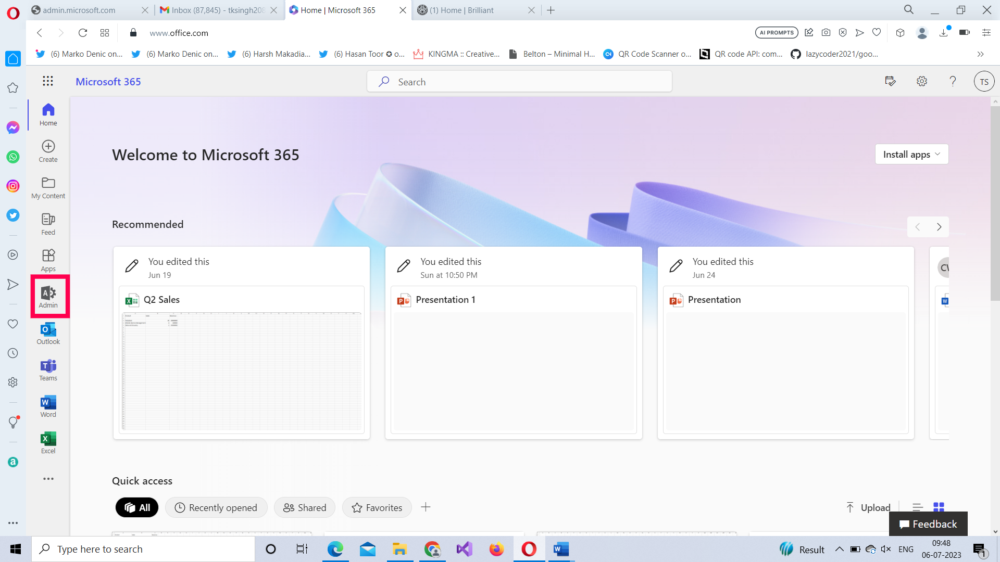
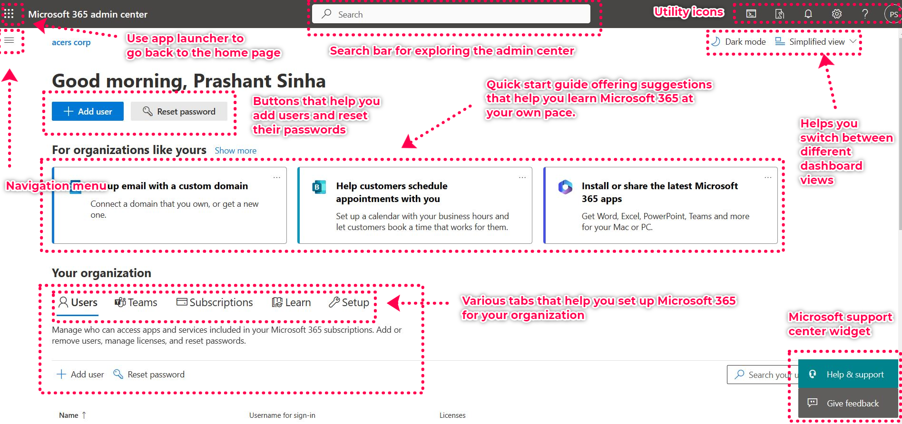
The welcome admin page can be broadly classified into four important sections:
-
The main page: lets you add users and reset their passwords; offers recommended activities for your organization; and has five different tabs (under Your organization section) that help you get started with Microsoft 365.
-
Navigation menu: this helps you navigate through the various sections within your admin center like Users, Teams & groups, Billing, Setup, etc., (The number of menus or sections appearing can be overwhelming at first. But do not worry, everything will be explained to you in detail).
-
The search bar: a contextual search bar that helps you navigate to different admin sections and directs you to actions that you might want to perform as an administrator.
-
Utility icons: that help you deal with routine and useful operations like viewing notifications, personalizing the Microsoft 365 settings, signing out of Microsoft 365, etc.,
Adding Your First Microsoft 365 User
To add your users right from the Microsoft 365 welcome page, do the following:
-
Click the Add User button. This opens the Add User pane shown in Figure 3.
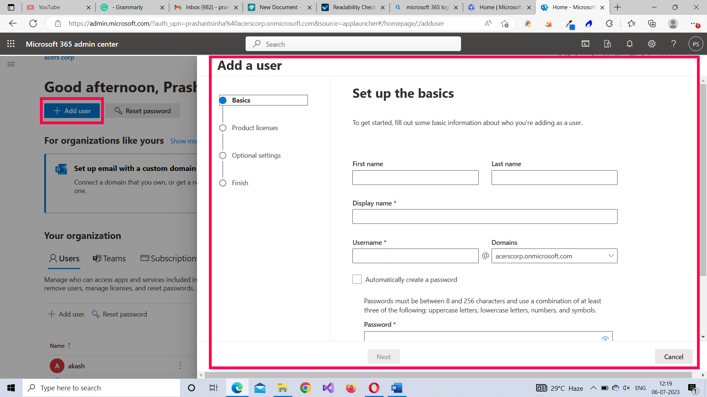
-
Enter the user’s First name, Last name, Display name, and Username. Then create the user’s password as shown in Figure 4. You can either automate the password creation or set it manually. You can also mail the user’s password to yourself and the user, if necessary. Click Next to proceed.
Note: The password you create should be a strong one with the right mix of uppercase and lowercase letters, special characters, and numbers.
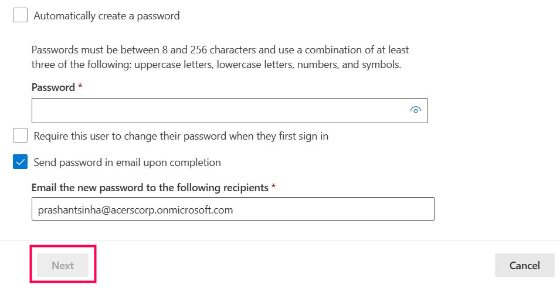
-
Then assign the product license to the user as shown in Figure 5. The location is set to the location you provide while signing up. In case your organization is spread across the globe, you can select the appropriate country from the dropdown. Click Next to proceed.
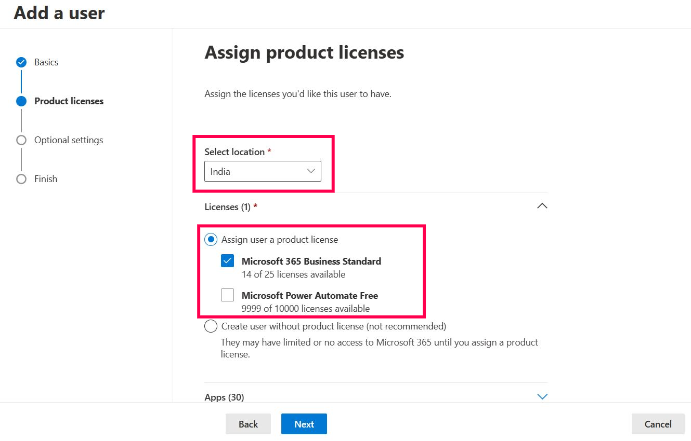
Note: Microsoft usually offers 1-2 free products. With the current Microsoft 365 Business Standard edition, you get Microsoft Power Automate for free for 10000 users.
-
Decide the user’s role and complete the user’s profiles. The user could be a basic user or admin in some capacity as shown in Figure 6. Let’s go with the default user role for now - which is that of a basic user with no admin access – and dive deep into user roles later. You can also complete the user’s profile as shown in Figure 7 by filling in the necessary details like Job Title, Department, and Office Phone, etc., Click Next to proceed.
Note: You could also work on the user profile later by editing the user’s details.
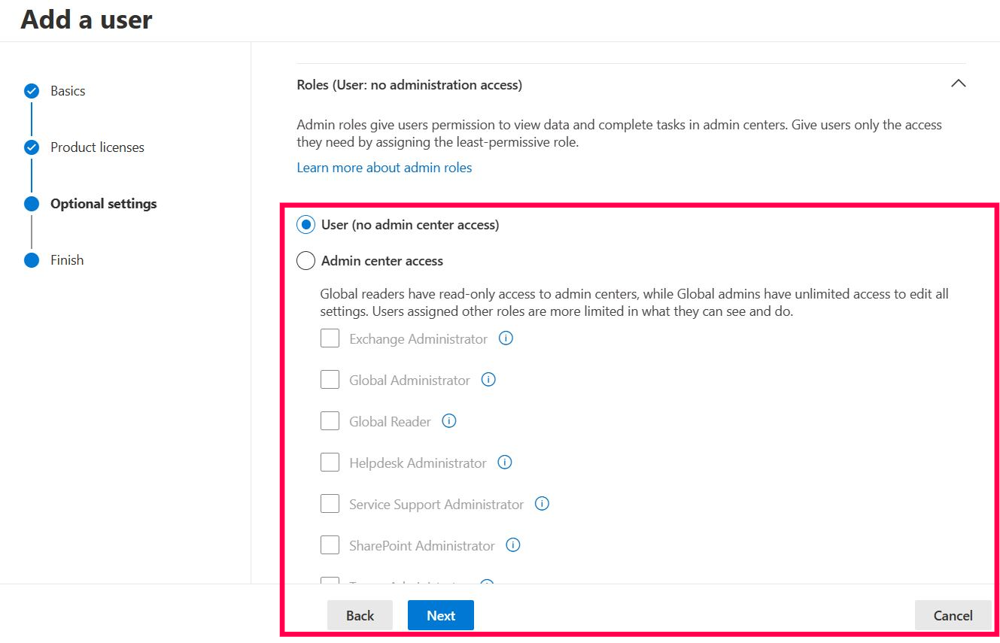
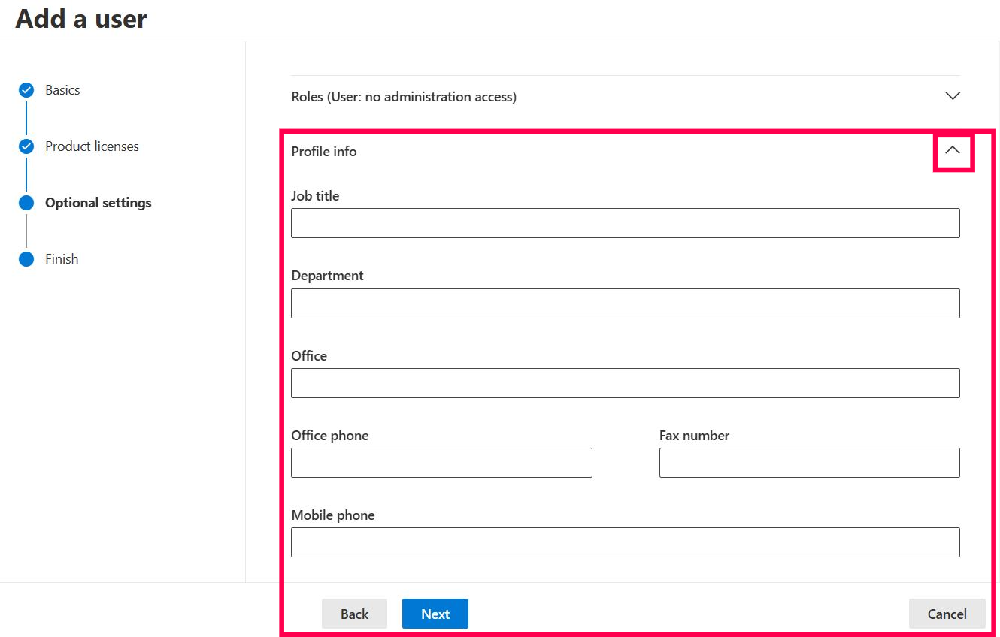
-
Review the user details you just created. You can also edit them here. If everything is right, click Finish Adding button to create the user. The user is created successfully as shown in Figure 8. Click Close to continue.
-
The user you just created appears under the Users tab as shown in Figure 8.
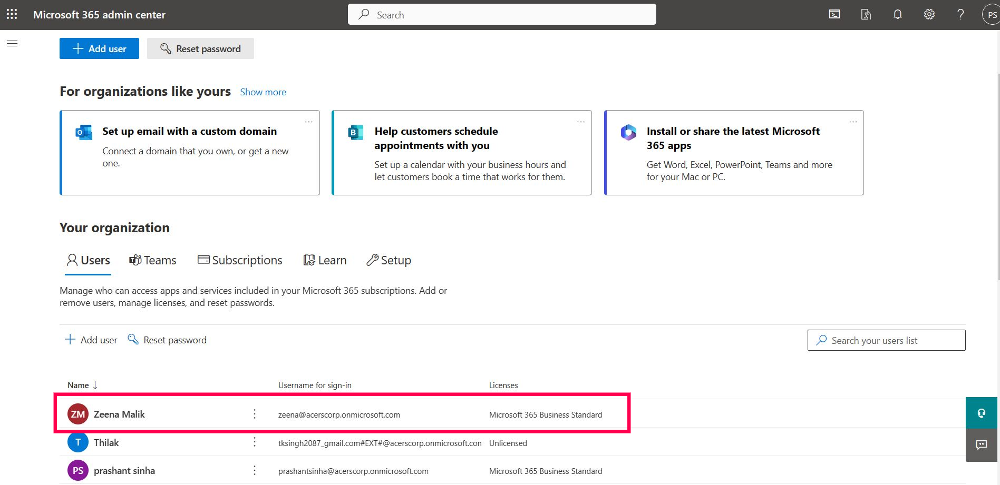
Note: You can also add users using the Add user button available under the Users tab.
Microsoft 365 User Password Reset
To reset the Microsoft 365 user’s password, do the following:
-
Click the Reset Password button shown in Figure 9. This opens the Reset Password pane as shown in Figure 10.
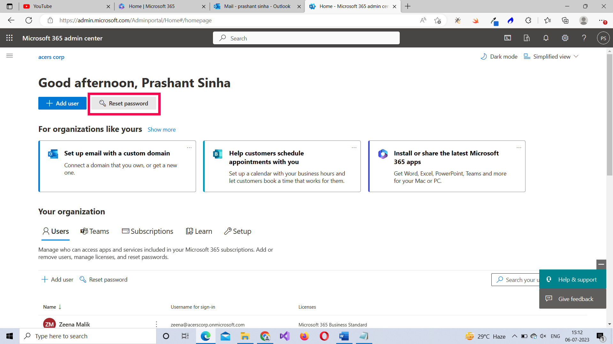
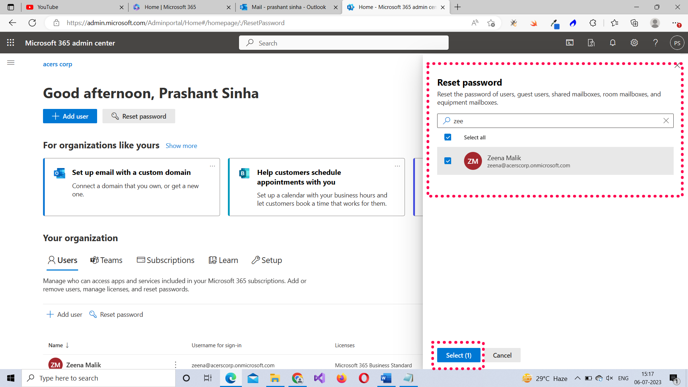
-
Search for the user whose password is to be reset by typing in the username and selecting the user by clicking on the username and selecting the Select button at the bottom.
-
When you reset the user password, you can choose to do the following (as shown in Figure 11).
- Automatically create the user password or do so manually
- Require the user to change their password when they first sign in
- Email the sign-in info with the new password to yourself
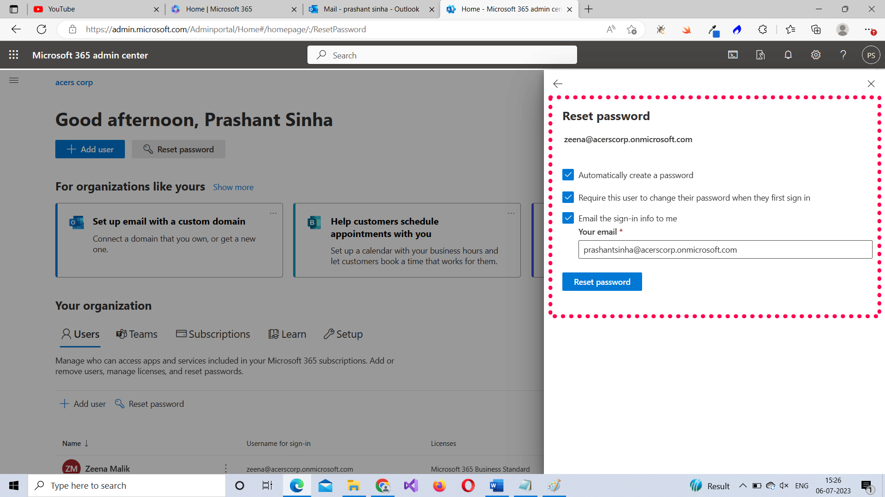
-
Click the Reset Password button after selecting the appropriate options. The user password gets reset and the new password is mailed to you, as indicated by the success message shown in Figure 12. Click the Close button to continue.
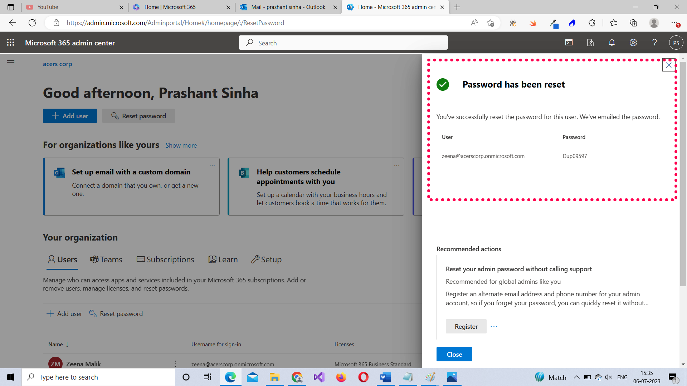
Note: You can now forward the new password details to the user. Also, it’s recommended to leave Require this user to change their password when they first sign-in option turned on for security reasons while you reset the user’s password.
Viewing the default Microsoft Team created for your organization
Under the Teams tab, you’ll notice a default team has been created for your organization by Microsoft 365. Teams are the way your users can communicate with each other. You can have multiple teams within your organization.
The default one you see being listed – containing your organization’s name using which you signed up – is an organization-wide team that automatically includes every user added to your organization.
To view the members of the team, do the following:
-
Click on the team’s name. This opens the team’s pane as shown in Figure 13.
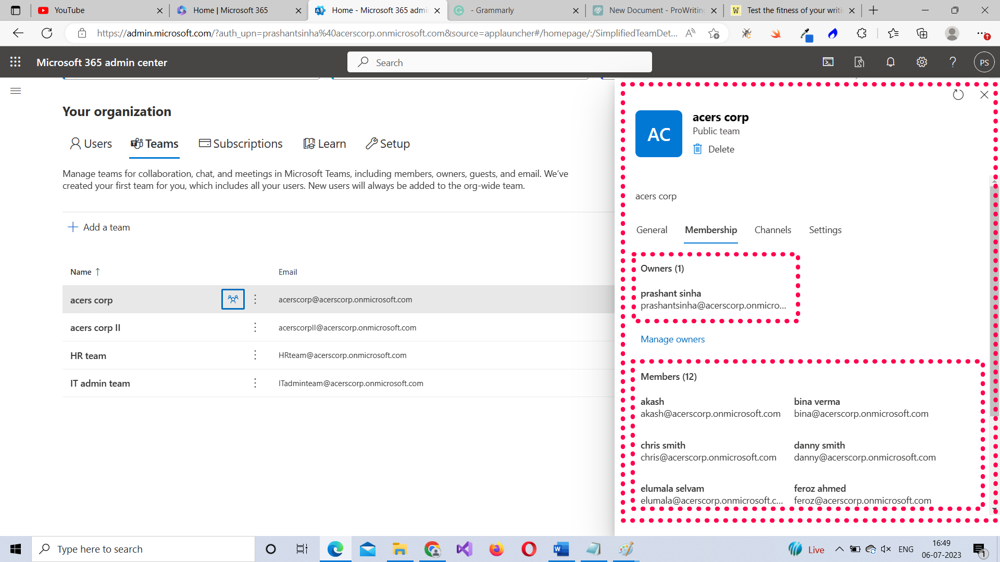
-
Navigate to the Membership tab. You’ll notice all the users you created get listed as members. And you get listed as the owner.
That’s enough information on Microsoft Teams for now. Let’s try creating one on our own.
Creating your first Microsoft Team
Let’s say you want to create a Microsoft Team for the content writers in your organization, you have to do the following:
-
Click the Add a team button under the Teams tab. Doing so opens the Add a team pane as shown in Figure 14.
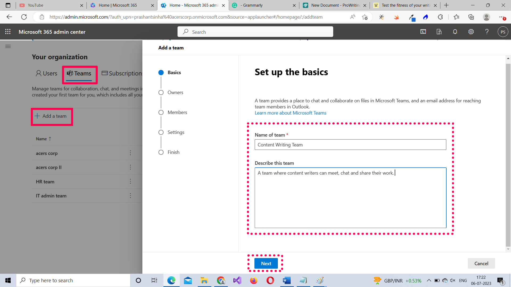
-
Enter a Name and suitable description for the team as shown in Figure 14 and click the Next button.
-
Select the Owners for the team from your user list as shown in Figure 15. A team can have multiple owners. Click Next to proceed.
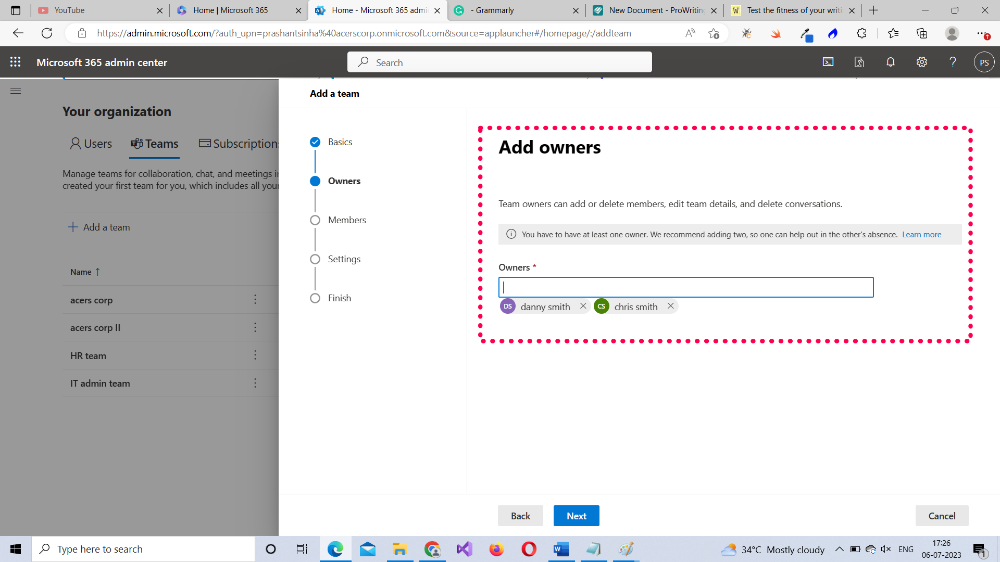
-
Select the members for the team from your user list as shown in Figure 16. Click Next to proceed.
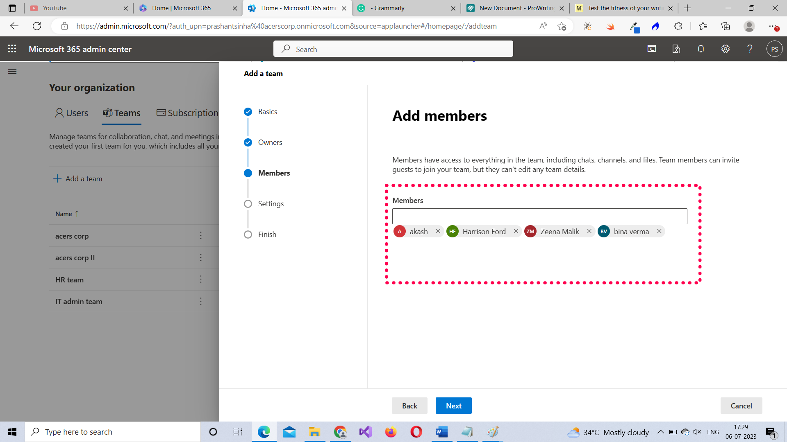
-
Specify the email address for the team as shown in Figure 17 and set the privacy setting of the team to Private. (Private teams are teams visible only to their members. More on private teams later). Click Next to continue.
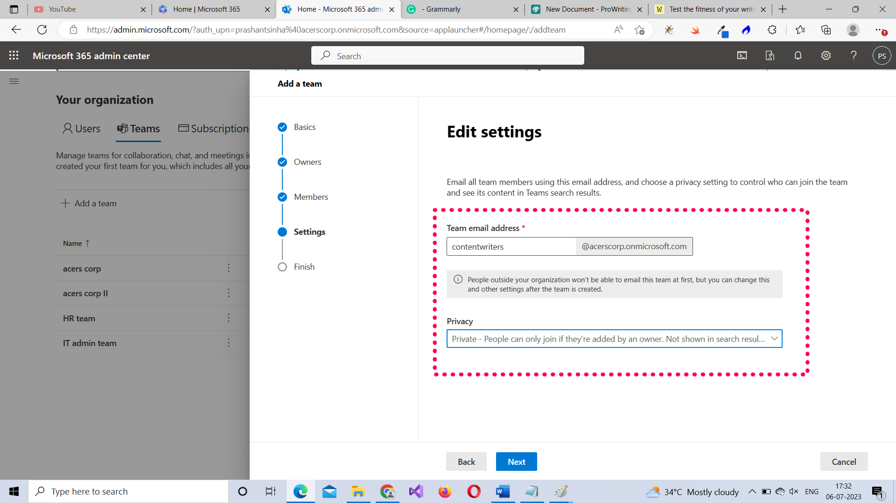
-
Review the team’s settings and if everything is fine, click the Add team button available at the bottom. The New team created message gets displayed as shown in Figure 18. Click Close to continue.
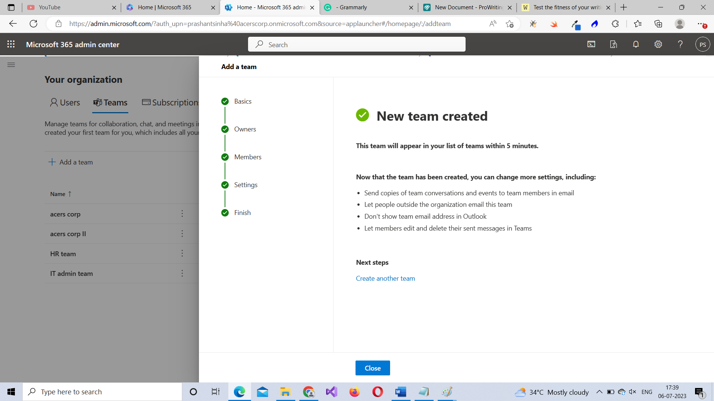
Note: We’ll take a look at how content writers can make use of this newly created team to share their work and collaborate with each other under the How to use Microsoft Teams section.
Checking your subscription details
The subscriptions tab is shown in Figure 19. Click on the product name being listed and your product details open as shown in Figure 20.
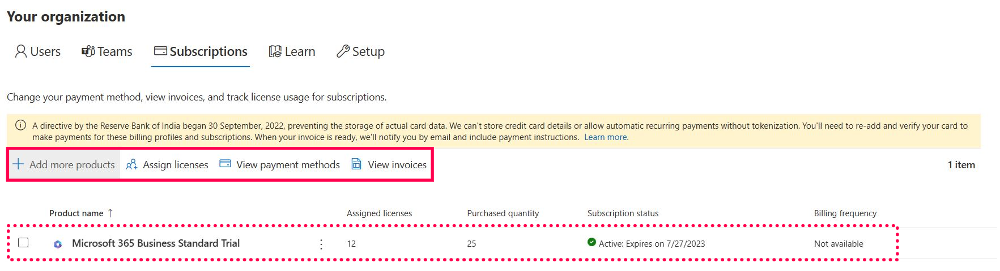
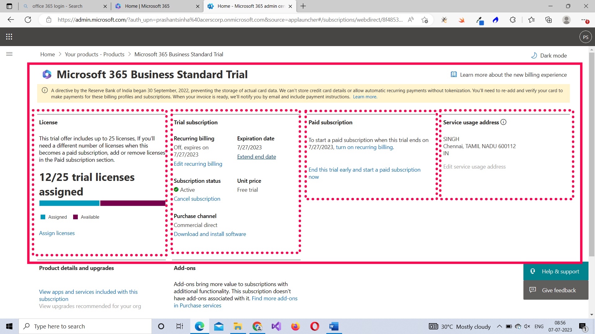
You also have the following options under the subscriptions tab:
-
Add more products: this helps you to add more products (like Microsoft 365 Business Premium, for example) to your subscription, if necessary.
-
Assign licenses: this helps you to assign licenses to your users in case you had forgotten to do while adding them.
-
View payment methods: this helps you to view your current payment method and also lets you add new ones, if necessary.
-
View invoices: this helps you to view your invoice details once the billing starts. This would be empty for the trial period.
The learning center
The learn tab is where you get useful resources from Microsoft that help you get started with Microsoft 365. It is a well-curated mix of videos and training articles that guide you without overwhelming you with too much information.
Note:Don’t miss out on the videos. They can be very useful
The setup tab
The setup tab shown in Figure 21 offers a checklist of basic actions you need to complete to get started with Microsoft 365. As you can see in Figure 21, two of the basic actions have been completed and three remain.
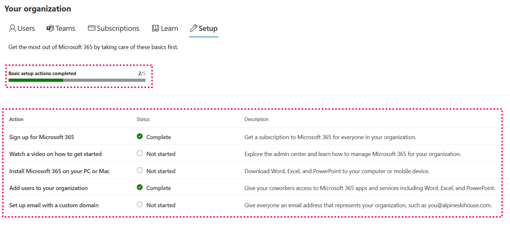
The search bar
The search bar at the top helps you search your admin center. The search results are comprehensive. They include the pages you are looking for, specific actions you want to perform, and any related information that might be available. You can check out the search bar in action in Figure 22.
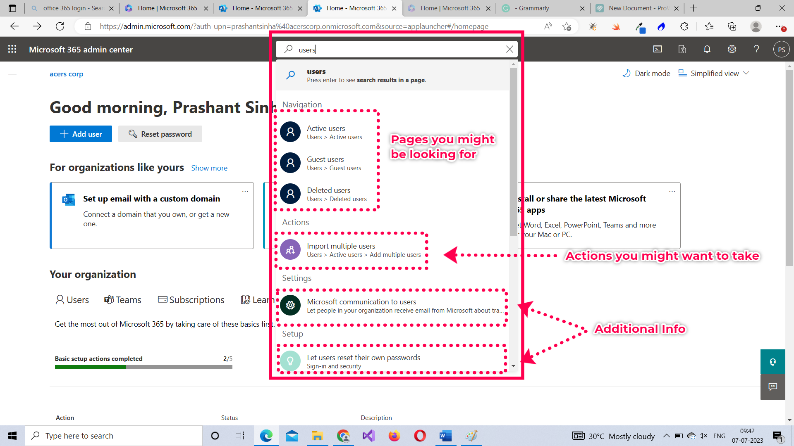
The utility icons
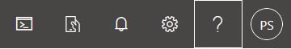
These icons available at the top right corner of your screen help you with routine and useful operations. The following icons are contained within utility icons.
-
Notifications Icon: all your Microsoft 365 app-related updates and notifications get listed when you click on this icon, helping you stay up-to-date about the product you have purchased.
-
Settings Icon: helps you personalize Microsoft 365 to suit your preferences. Here you can set your Microsoft 365 portal’s theme, set your region’s language and time, modify your password, and update your contact preferences with Microsoft.
-
Help Icon: helps you search for self-help solutions from the Microsoft knowledge base and also keep track of any service requests you raised with Microsoft. If nothing works out, you always have the option of contacting Microsoft support. Figure 23 shows the help icon in action.
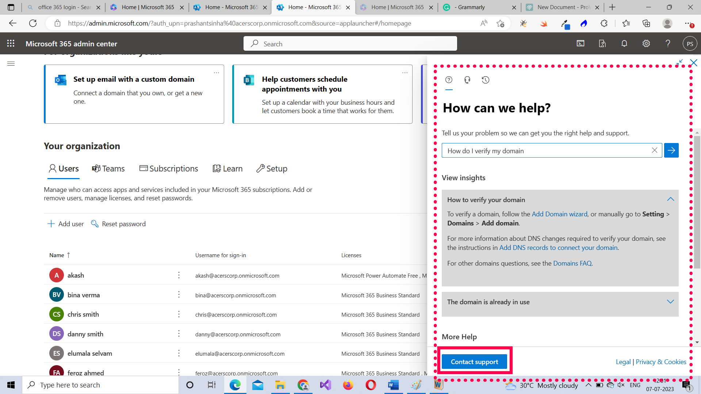
-
Account Manager Icon: helps you sign out of your application, switch between accounts if you have multiple accounts, view your Microsoft account details, and view as well as update your Microsoft 365 profile.
Note: The first icon – cloud shell – is an advanced administrator topic that we’ll deal with later, once you get acquainted with what Microsoft 365 admin center offers. For now, just remember that these cloud shells help you run scripts that can automate several admin tasks, making their lives easy.
Note: The second icon helps you download the Microsoft 365 admin app for mobile so that you can manage your Microsoft 365 users right from your phone.
What’s Next?
Now that you have added your users to your Microsoft 365 tenant. It’s time to start interacting with them. So, let’s dive deep into Microsoft Outlook 365 and understand how you can send/receive mails, set up meetings and your work calendar, add contacts and much more in the next article which focuses on Microsoft Outlook basics.